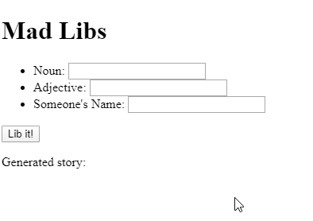

HTML/JS: Making Webpages Interactive
This module had me learn about another important part of web development, interactivity. By referencing the DOM, I learned about using JavaScript to make a webpage interactive and make it better for users.
Impact on Me as a Student
This helped me to learn more about an important aspect of web development. Interactivity. This was done by using the Document Object Model or DOM. The module used different access methods to change elements of an already made webpage using JavaScript and went further by using the DOM to have the webpage react to user events and even create animations. I learned of the connections between HTML, CSS and JavaScript through this module. I gained an understanding of the importance of making webpages interactive as it enhances the user experience which is the main objective in creating webpages.
How Will I use this to Continue Learning?
Having learned the basics of adding interactivity in webpages I can further learn about the different ways to make a webpage interactive as well as the possibilites with interactivity. For example, I can expand my knowledge by using a library such as jQuery which is good for adding interactivity for webpages and doing it in a different way. With the knowledge I've gained from this module I can make better webpages and further myself in the field of web development.